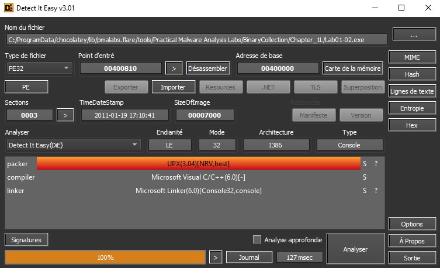
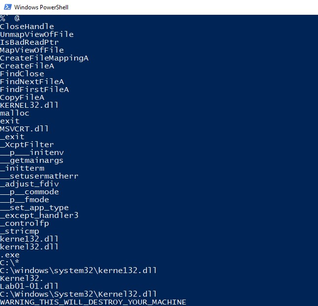

Practical Malware Analysis: Lab 1 - Basic Static Techniques
Use the tools and techniques described in the chapter to gain information about the files and answer the questions.
The tools and techniques used in this chapter:
- PEid / Detect-It-Easy (DIE) : PEid is outdated and is no longer under development. DIE is a great alternative for PEid.
- Dependency Walker / Dependencies : Dependencies is a rewrite of the legacy software Dependency Walker which was shipped along Windows SDKs, but whose development stopped around 2006. Dependencies can help Windows developers troubleshooting their dll load dependencies issues.
1. Upload the files to http://www.VirusTotal.com/ and view the reports. Does either file match any existing anitirus signatures ?
You can either upload directly the file in VirusTotal or check the md5 hash. Since that our Flare VM does not have internet connection, we will check the MD5 hash of each file on VirusTotal to see if those file signatures are known as malicious in the existing antivirus database.
Get-FileHash -algorithm md5 .\Lab01-01.dll
Lab01-01.dll MD5: 290934C61DE9176AD682FFDD65F0A669
Or you can also use other tools, such as Detect-It-Easy to retrieve the hash of a file. The following hash belongs to the file "Lab01-01.exe".
The file has been recognized by many antiviruses.
2. When were these files compiled?
VirusTotal also provides many information regarding the file being analyzed. Getting into the detail tab, we can check when the file has been created, what other name, the same file has used, the size of different memory section and the import and export.
The file information can be retrieved with the tool "PEview" that we display the information that are stored in the PE file header. The IMAGE_FILE_HEADER entry contains the basic information about the file. Among those information, we have the time when this executable was compiled.

3. Are there any indications that either of these files is packed or obfuscated? If so, what are these indicators?
A common indication showing that the file is packed is to compare the virtual data size and the raw data size. The raw data size indicates how big the section is on disk and the virtual size tells us how much space is allocated for a section during the loading process. Therefore if the Virtual size is much larger than the raw data, meaning that the computer allocate more space than it is supposed to do, then it might mean that the executable code is packed.
To get this information, select "IMAGE_SECTION_HEADER .text" and compare the "Virtual Size" and "Size of Raw Data". The .text section is where it contains the executable code. In our case, the virtual size is very similar as the size of the raw data, those small differences can be due to the differences between the alignment in memory and on disk. You can also check if the file is packed with Detect-It-Easy. In case if the file is packed, it will be displayed such as the following screenshot. 
4. Do any imports hint at what this malware does? If so, which imports are they?
Dependencies is a updated version of Dependency Walker, it list the dynamically linked functions in the program.
The file Lab01-01.exe imports two .dll files, "Kernel32.dll" and "MSVCRT.dll". By importing Kernel32.dll, some functions are available for the program, such as "CreateFileA" and "CopyFileA" that can indicate that the program will create a file when it is being executed. The function "FindFirstFileA" and "FindNextFileA" might indicates that the program will search through directories. "MSVCRT.dll" contains the functions of the C standard library.
From the imported functions, we cannot exactly tell what the program does. The two .dll files imported are really common, Kernel32.dll contains fucntions to access and manipulate files.
5. Are there any other files or host-based indicators that you could look for on infected systems?
We have previously looked if the file Lab01-01.exe is known by antiviruses, if it is packed, and the import functions. However, we haven't really looked at the strings that can give a lot of information such as IP address and URL used in the program.
strings Lab01-01.exe

Looking at the strings, we've found again the function imported by Kernel32.dll, seen with the program Dependencies. But instead of kernel32.dll, there is another .dll in the string, kerne132.dll. The malicious dll tries to hide behind a legitimate dll used by Windows. The path of the dll is found on "C:\windows\system32\kerne132.dll".
6. What network-based indicators could be used to find this malware on infected machines?
strings Lab01-01.dll
This .dll is importing other .dll such as WS2_32.dll, which is a networking .dll that most likely connects to a network or performs network-related tasks. Moreover, the strings of the file also shows an IP address. We can suspect that the program might request a file or send data to this IP address.
7. What would you guess is the purpose of these files?
By executing Lab01-01.exe, it will import several .dlls ("Kernel32.dll, WS2_32.dll"). The victim system will request the file "Kerne132.dll" from the IP address "127.26.152.13", this is probably why Dependencies didn't find it. Then the file will be copied under the path C:\windows\system32. Kerne132.dll might run as a process with the function "CreateProcessA" and might be a backdoor for the attacker, so that he can have remotely access to the victim system as long as the backdoor is present.